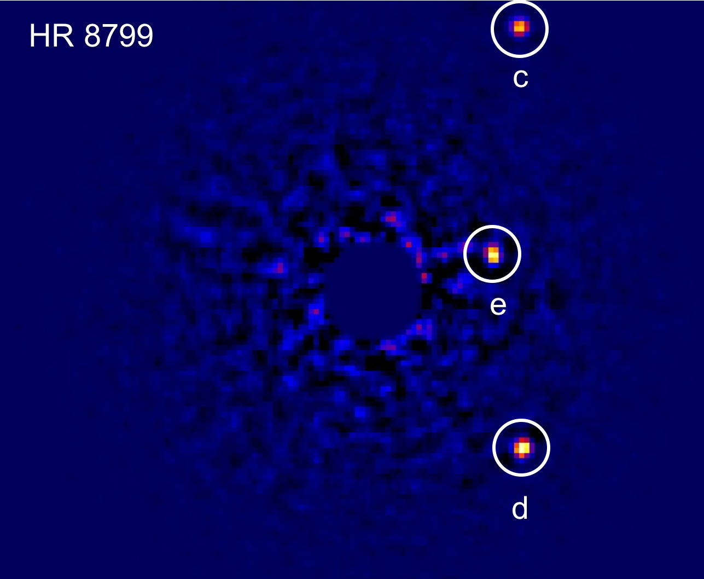
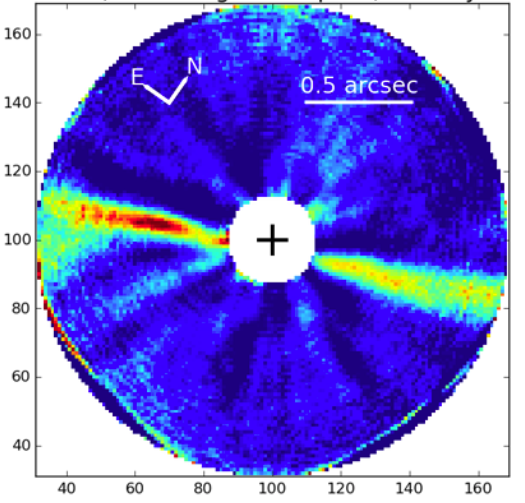

{kind=link}

(Data reduction performed by T. Currie)
This page shows some of the scientific highlights from SCExAO. Some of the figures have been published and others have not. Please contact us for more information.
|  |
Data for HR 8799 reveal planets cde at extremely high SNR even without aggressive SDI, yielding high-quality JHK spectra. (Data reduction performed by T. Currie) |
|---|
| |
The low-mass companion kappa And b is easily visible in raw CHARIS data and detected at SNR > 175 in 14 minutes of integration time. Its spectrum may provide new constraints on its gravity (and, in turn, its mass). (Data reduction performed by T. Currie) |
|---|
 |
HIP79977. SNR = 3-7 and the IWA is ~0.3”. SNR improved by 2-3x with respect to HiCIAO alone. (dec 2015) (Data reduction performed by T. Currie) |
|---|
 |
CHARIS data for HD 32297 (left) reveal the disk down to ~0.1”—0.15”. (Data reduction performed by T. Currie) |
|---|
|  |
CHARIS data for another debris disk provides some evidence for a hitherto unseen brightness asymmetry. Spatially-resolved spectra available with CHARIS can constrain the dust composition of these and other debris disks. (Data Reduction performed by T. Currie and S. Goebel) |
|---|
{kind=link}